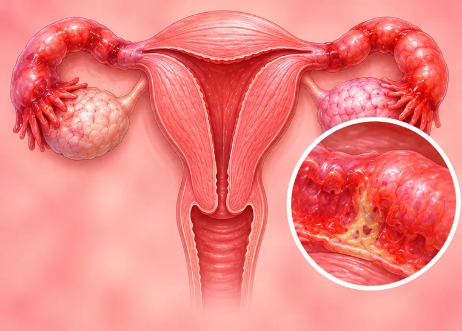

急性盆腔炎
子宫、输卵管和卵巢突然发生感染，引起下腹痛，需要医生处理
这是什么
子宫、输卵管或卵巢突然发生感染，多半是病菌从阴道向上蔓延所致，可引起下腹痛、发热和异常的分泌物。
- 下腹部、子宫、输卵管
- 有性生活的女性
- 下腹痛、发热
- 就诊科室
- 家庭医生或妇科医生，要尽快就诊
- 多发人群
- 有性生活的女性；分娩、流产或子宫手术操作之后也可能出现
- 传染性
- 部分类型会传染，因为病菌常通过性行为传播
- 病程
- 忽视不管可能加重；及早看医生可降低留下长期问题的风险
常见表现
下腹坠痛盆腔痛 白带异常或私处瘙痒阴道分泌物异常 发烧发热 同房时或同房后疼痛性交痛 排尿灼痛排尿灼痛（尿痛）
为什么会这样
细菌或病毒感染感染性病因
其他原因
- 常由性传播的感染引起，如衣原体或淋病
- 性生活不用安全套，或伴侣有感染
- 分娩、流产或子宫手术操作（如放置宫内节育器）之后病菌进入
- 以前得过这种感染，再次发生的可能性更高
出现这些情况请先看医生
- 下腹剧痛并伴有高烧、呕吐，或腹部变硬、一按就痛：立即去医院
- 感到头晕欲倒、极度虚弱、意识不清或心跳很快：拨打999
- 怀孕或可能怀孕时出现下腹痛或出血：立即去医院
- 下腹痛并伴有异常分泌物或发热：今天就去看医生，不要拖
- 开始吃医生开的药后不久仍没有好转：请回去找医生
- 性生活时出现新的疼痛，或两次月经之间出血：尽快看医生
如果有以上情况，请先看医生，再来做调理。
本页只是一般性的健康资讯。请继续按时服用平常的药物，并继续看医生。
请继续日常治疗
请继续按医嘱服药，并按时复诊。我们的调理是温和的辅助，不能代替医疗。
日常护理
按医嘱用药遵医嘱服药 好好休息休息
更多自我照顾的方法
- 如果怀疑是这种情况，请尽快看医生，不要等它自己消失
- 请问医生伴侣是否也需要检查
- 使用安全套可以降低感染或传染的机会
告诉理疗师
- 发烧或正在感染
- 怀孕
- 心脏起搏器或金属植入物
调理师会在开始前和你确认这一项。
相关疾病
参考资料: General information based on public health sources such as Mayo Clinic, NHS, Cleveland Clinic and NCBI StatPearls.
页面更新: 2026-10-31